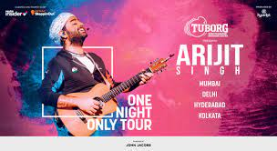

Arijit Singh - One Night Only Tour|Sign Up To Get Updates
About the Event
It is finally here!
Arijit Singh is going on a multi-city India tour THIS NOVEMBER and we’re already preparing to sing his all-time hits out loud. Our favourite melody king is back to charm us with his One Night Only Tour, an experience like never before.
The man who added all the right notes to our ‘Love storiyan’ and ensured our 'Khairiyat’ for many years is taking stage FINALLY to mesmerize us with some of his favourite chart-toppers including Channa Mereya, Tum Hi Ho, Phir Le Aya Dil, Duaa. So kabirrrrraaaaa, sign up to be the first one to get updates about tickets for Arijit Singh’s One Night Only in your city
We are ready! Galti se mistake na ho jaaye, make sure you register RIGHT NOW
BRB, we are brushing up on our Arijit lyrics, we hope you are too!

When will the tickets go live?
Soon enough. If you register on this page, we will notify you as soon as tickets go on sale to ensure you are one of the first ones to know !
When will the venues and dates be announced?
All important information & details for the tour will be shared when tickets go on sale.
Will I get priority access to tickets if I sign up?
You will get an email/Whatsapp/SMS from Paytm Insider notifying you about ticket sales being open. We will also make an announcement about the same on our social media handles so make sure you follow us and keep your eyes peeled!
Is the concert open to people of all ages?
Yes! We wouldn’t want anyone missing out on this amazing experience. A few things to keep in mind, though: Children up to the age of 3 years can enter for free but no seating may be provided for them. Children above that age will require a ticket. Due to the event involving a live band performance, all parents/guardians are requested to bring their kids at their own discretion. If you are under the age of 16, you will need to be accompanied by an adult guardian.
Disclaimer : Please note that all registrations and tickets are exclusively available only on Paytm Insider. Beware of unauthorised parties claiming to issue tickets. Tickets purchased or secured from other sources will not be valid.